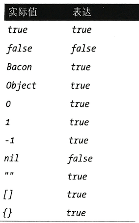

第二节 Ruby和Chef语法
1、Ruby语法和案例
提示语法检奋
Ruby提供内建的机制来验证文件是否包含有效的Ruby语法. 可以通过传递-c参数和文件路径到Ruby解释器来检查Ruby文件
$ ruby -c /path/to/ruby/file
如果语法是正确的此命令会返回Syntax OK, 否则它会返回一个堆栈轨迹来帮你找到哪行代码出错了。
1-1 注释
在Ruby中, 井号(#)代表注释口注释是代码中的文档\＃符号之后的代码将被解释器忽略, 只供人阅读:
variable = 2 # This is comment
# This multiple lines comment
# "#" This is start of line
# Why buy bacon.strips
if bacon.strips < 5
buy_bacon
end
1-2 变量
从前面的例子中我们否到，Ruby中的变量将符号右边的值赋予左边的变散名
variable=2 #这将数值2赋给变量名为variable的变量
因为Ruby不是静态类型语言, 所以不需要在给变量赋值时声明变量类型。
下面的例子展示将不同类型的值队给变量：
一个数字一个宇符串hello和一个对象。 赋值之前你不需要告诉Ruby一个变量要储存什么类型的内容：
a = 1
b = 'hello'
c = Object.new
在Ruby中变量可以在它声明的最远范围内访问。
下面的例子更好地展示变量范内的访问，首先我们声明一个名字为bacon_type（培根类型）的顶级变量， 并赋值crispy。
然后这培根烤两次, 一个额外的变量temperature被赋值300,最后脚本尝试访问temperature变量但它已经在可访问范围之外
bacon_type = 'crispy'
2.times do
puts bacon_type
temperature = 300
end
puts temperature
- 在顶级范围
bacon_type变量， 因此它在此情境下的任何地方可以被访问 - 我们可以在一个更加特定的范围内（比如一个循环）访问
bacon_type变量。 - 在一个范围内声明的变最只能在这个范围内被访问
- 在变量声明的范围外尝试访问这个变最会得到一个异常
undefined local variable or method 'temperature'
1-3 数学运算
if hours % 3
puts "It's bacon time"
end
Math.hypot(43, 57)
1-4 字符串
在Ruby创建字符串有两种普遍的方法, 用单引号或者双引号，
- 单引号的好处是占更少的位置并不会应用内插的变量
- 双引号字符串的优势是支持给作为字符串一部分的变量赋值；这样的赋值过程称作字符串内插。
在双引号内的字符串中，我们用井号和大括号来表示需要内插的变量，Ruby则会用这个变量的值替换这个变量作为字符串的一部分。在以下例子中，#\{x｝在字符串中代表变量x的值。
双引号字符串和单引号字符串都用反斜杠（\）字符来转义特殊字符。
"double quoted string" #=> 'single quoted string'
'double quoted string" #=> "single quoted string"
x="hello"
"#{x} world" #=> "hello world"
'#{x} world' #=> '#{x} world'
- 双引号字符串内插变量，输出结果中变量值替换了变量名。
- 单引号字符串不支持内插变量，输出结果就是引号内内容. *
"quotes in \"quotes\"" #=> "quotes in \"quotes\""
'quotes in \'quotes\'' #=> "quotes in \"quotes\""
有时候需要转义特殊字符。
你需要转义名字中的单引号：
player=’Jim O\'Rourke'
或者也可以用双引号字符串来避免使用转义字符：
player="Jim O'Rourke"
1-5 Heredoc表示法
在Chef中，你有时会见到字符串的“heredoc”表示法。heredoc在表示多行字符串时尤 为有用。
heredoc表示法由两个“小于号”(<<)动开始，然后跟着一些用来描述文本的标 识。这些标识可以包含任何字符串，但不应该是一个在要表示的文本本身中包含的字符串。在下面的例子中，我们使用METHOD_DESCRPTION作为描述文本的标识：
<<METHOD_DESCRIPTION
This is a multiline string.
All the whitespace is preserved,and I can even apply# {interpolation}inside this block.
METHOD DESCRIPTION
例子中显示了在用heredoc表示的字符串中可以包含多行文本或空白符，甚至可以应用内
1-6 True and False 表示法

! -> not
!true => false
not true => false
not flase => true
!!true => true
not nil => true
**1-7 数组 **
可以通过使用Ruby数组来创建列表。如以下例子所示，Ruby的数组使用中括号来表示．数组的索引从零开始，当你往数组中添加新项目时，Ruby的解释器会自动分配所需的内存，因此你不需要考虑动态调整数组大小：
types = ['crispy,'raw','crunchy','grilled']
types.length #4
types.size #4
types.push 'smoked' # ['crispy,'raw','crunchy','grilled','smoked']
types << 'deep fried' # ['crispy,'raw','crunchy','grilled','smoked','deep fried']
types[0] #crispy
types.first #crispy
types.last #deep fried
types[0..1] #['crispy,'raw']
emp[0] #Morgan
emp[1] #Citi
emp << 'Bob'
emp.last #Bob
1-8 散列（哈希）
Ruby支持散列的内容是键值对 （哈希）（有时候在其他语言中叫字典或映像）。散列和数组类似，但它 （一个键对应一个值），而不是单个项目。散列可以通过大括号来创建 (+_{}):
prices = { oscar: 4.55, boars: 5.23, wright: 4.65, beelers: 6.99}
prices[:oscar] #4.55
prices[:boars] #5.23
prices[:oscar]=1.00
prices.values #[4.55, 5.23, 4.65, 6.99]
字符串，符号和Mash
key: value <=> :key => value<1>
=>散列火箭（hash rocket)
hash = { 'key' => value }
hash['key'] #value
- 字符串作为键
mash = HashieMash.new((key: value))
mash[:key] # value
mash['key'] # value
mash.key # value
players = {
'M, A' => {
'AVG' => 0.311,
'OBP' => 0.385,
'SLG' => 0.507,
},
'A, P' => {
'AVG' => 0.235,
'OBP' => 0.297,
'SLG' => 0.477,
}
}
players['M, A'] # {'AVG' => 0.311, 'OBP' => 0.385, 'SLG' => 0.507}
players['M, A']['AVG'] # 0.311
1-9 条件和控制流
ifif not<=>unless
if some condition
puts "happened"
else
puts "didn't happen"
end
# unless
some condition
puts "didn't happen"
else
puts "happened"
end
if false
puts "this can't possibly happen"
elsif nil # nil is false
puts "this won't happen either"
elsif true
puts "this will definitely happen"
else
puts "this won't happen, because the method is short-circuited end
case
case some_condition
when "literal string"
# ...
when /regular expression/
# when list, of, items
# ...
else
# ...
end
case player.age
when 0..12
'Minor League'
when 13..18
'Developing'
when 19..30
'Prime'
when 31..40
'Decline'
else
'Retirement'
end
1-10 方法、类和模块
虽然在学习和Chef更高级的交互之前，不需要用到这些，但Ruby支持方法、类、模块和面向对象的结构。在Ruby中，
我们用def关键字来定义方法，用class关键字来定义类， 用module关键字来定义模块：
class Bacon
def cook(temperature)
#...
end
end
module Edible
#...
end
- 用
class关键字创建类。 - 用
def关键字创建方法，并且可以接受参数。 module关键字创建模块。
我们可以通过方法的名字将其调用。调用时，Ruby并不要求对参数使用括号，但我们强烈推荐养成使用括号的习惯来增加代码的可读性：
my_method(5)-
my_method 5 -
执行名字为
my_method的方法，并使用参数5 - 同样执行
my_method方法及使用参数5，但不使用括号。
在Ruby中，方法是可以连续执行的。 如果一个方法的返回结果可以执行另一个方法，可
以将它们写在一行执行downcase方法 下面的例子用一行代码对
"String"，字符串执行upcase方法，对其结果然后对共结果执行reverse方法：
"String".upcase.downcase.reverse #=> "gnirts"
2、Chef语法和案例
Chef使用的领域专用语言（DSL）是Ruby的一个子集。在Chef代码里，你不仅可以使用 它的领域专用语言，也可以使用Ruby编程语言的全部功能。这允许了开发者在Chef代码中使用条件、执行数学运算以及和其他服务沟通，等等。在深入讨论Chef的领域专用语言之前，我们先来看看基本语法。
以下是一个Chef领域专用语言的例子，展示如何通过使用Chef的“用户”资源来创建一个用户账户。在Chef中，“资源”是用来定义你的基础架构特定部分的组件。
比如说，以下的例子管理一个名为alice、用户ID为503的用户账号：
user 'alice' do
uid '50
end
以下的例子更抽象地展示调用Chef领域专用语言方法的综合语法，以上的例子基于这个法：
resource 'NAME' do
parameter1 value1
parameter2 value2
end
第一个部分指定要使用的资源（比如说template、 package或service)，然后跟着该资 源的名字属性（name_attribute)。
这名字的意义和用途在不同的资源中有所不同。比如，在package资源中，名字（name_attribute)代表你要安装（或管理）的程序包的名字；
在template资源中，名字代表使用该模板最终渲染的文件在目标机器上的路径。在定义资源的名字属性之后，我们使用Ruby的关键字do。在Ruby中，使用do关键字永远需要配合一个end关键字来结尾。在do和end中间的代码称作一个代码块。
在此代码块中， 我们可以声明资源的参数和他们的值。这些参数和值在不同的资源中也是不同的，
- 比如
package资源有version参数可以定义要安装的程序包版本， template资源支持source参数来定义源模板的位置以上Chef领域专用语言代码也可以用Ruby面向对象的方法来理解，像下面的例子一样以上的Chef的领域专用语言其实为你创建了一个资源对象，设定正确的属胜和参数，然后在Chef运行那段代码时执行该资源，它等同于：
resource = Reosuce.new('NAME')
resource.parameter1 = value1
resource.parameter2 = value2
resource.run
以下案例展示如何使用template, package和service资源，这些资源只是Chef濒域专用语言支持的许多资源中的三个：
template '/etc/resolv.conf' do
source 'my_resolv.conf.erb'
owner 'root'
group 'root'
mode '0644'
end
package 'ntp' do
action :upgrade
end
service 'apache2' do
restart_command ./etc/init.d/apachez restart'
end
如果在资源的代码块中指定了无效的参数（不存在或拼写错误）Chef会抛出异常
NoMethodError
...... undefined method 'not a real parameter' for ChefResourre
Chef使用多阶段执行模式，这允许你在Chef想针对一个数组中所有的对象执行一个资源
file资源是用来管理文件的，content参数用来指定写到文件的内容
['bacon', 'eggs', 'sausage'].each do |type|
file "/tmp/#{type}" do
content "#{type} is delicious!"
end
end
Chef 动态分解循环
file 'itmp/bacon' do
content 'bacon is delicious!'
end
file 'Amp/eggs' do
content 'eggs is delicious!'
end
file '/tmp/sausage' do
content 'sausage is delicious!'
end
当Chef动态计算某个值时， 数值都是在第一阶段被计算和存储
free_memory = node['memory']['total']
file '/tmp/free' do
contents "#{free_memory} bytes free on #{Time.now}"
end
执行第二阶段时
file '/tmp/free' do
contents "12904899202 bytes free on 2013-07-24 17:47:01 -0400"
end
file, service,template,package都是Chef的核心包， 可以在（https://docs.chef.io/resource_reference.html）查看
3、常用的Chef语法
3-1 bash
- 使用
bash执行多行shell(bash)脚本
bash 'echo "hello"'
3-2 Chef_gem
在Chef内安装一个Ruby程序(gem)，在Chef内部使用。 如果你的Chef代码需要额外一个
的gem来执行一个函数, 可以用这个资源来在Chef内部安装这个额外的gem
# 安装'HTTParty gem', 这样在Chef代码中我们可以用它来发送'RESTful'请求
chef_gem 'httprty'
3-3 Cron
每周重启电脑
cron 'weekly_restart' do
weekday '1'
minute '0'
hour '0'
command 'sudo reboot'
end
3-4 deploy_revision
控制和管理应用程序部署部署, 在代码版本控制工具中的代码（如Rails应用程序)
# 从版本控制工具中复制和同步代码
deploy_revision 'opt/my_app' do
repo 'git://github.com/username/apo.git'
end
3-5 directory
管理目录或目录树处理权限和所有者
# 用递归来确保 '/opt/my/deep/directory'录树中的每层目录都存在
directory 'opt/my/deep/directory' do
owner 'root'
group 'root'
mode '0644'
recursive true
end
3-6 execute
执行任何单行的命令
# 将内容写到文件
execute 'write status' do
command 'echo "delicious" > /tmp/bacon'
end
3-7 file
管理已经存在（但不受Chef管理）的文件
# 删除/tmp/bacon文件
file ‘/tmp/bacon' do
action :delete
end
3-8 gem_package
在Chef外安装一个Ruby程序（gem),比如在目标机器的系统中安装个应用程序或工具:
# 安装bundler来管理应用程序依赖
gem_package 'bundler'
3-9 group
创建或管理一个包含本地用户账户的本地组
# 创建bacon组
group 'bacon'
3-10 link
创建和管理符号和硬链接
# Link /tmp/bacon to /tmp/delicious
link '/tmp/bacon' do
to '/tmp/delicious'
end
3-11 mount
挂载和卸载文件系统
# 挂载/dev/sda8
mount '/dev/sda8'
3-12 package
用操作系统提供的程序安装管理器安装一个程序包
＃安装`apache2`程序包（在`Debian`系统里）
package 'apache2'
3-13 remote_file
从一个远程位置（比如网站）传输一个文件
# 下载远程文件到'/tmp/bacon'
remote_file 'tmp/bacon' do
source 'http://bacon.org/bits.tar.gz'
end
3-14 service
停止或重启一个服务
# 重启apache2服务
service 'apache2' do
action :restart
end
3-15 template
管理以纯文本为内容的嵌人式 Ruby (ERB）模板
# 用'bits.erb'模板渲染/tmp/bacon文件
template '/tmp/bacon' do
source 'bits.erb'
end
3-16 User
创建管理本地用户账号
# 创建Bacon 用户
user 'bacon'
4、本节小结
Ruby语法和案例Chef语法和案例- 常用的
Chef语法